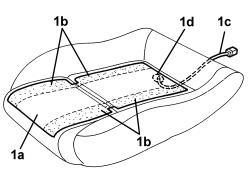

7045M22 HEATER PAD FOR FRONT SEAT CUSHION, LEFT OR RIGHT - R.R. FOLLOWING ELECTRICAL CIRCUIT CHECK
- Path
- Procedures > 70 FITTINGS > 7045 FRONT SEATS > 7045M FRONT SEAT HEATING > 7045M22 HEATER PAD FOR FRONT SEAT CUSHION, LEFT OR RIGHT - R.R. FOLLOWING ELECTRICAL CIRCUIT CHECK
- Kind
- repair procedure (removal / refitting; the operation number is the code)
- Applies to
- all engines; all production periods
- Interactive page
- https://sloeber94.github.io/elrnDB/#/939005568
Applies to: all engines; all production periods
 Removing
Removing
 Refitting
RefittingOp. 7045A10 FRONT SEAT (ONE), LEFT OR RIGHT - R.R.
Op. 7045A24 FRONT SEAT BACKREST ANGLE ADJUSTMENT KNOB (ONE), LEFT OR RIGHT - R.R.
Op. 7045A56 DRIVER'S SEAT HEIGHT ADJUSTMENT DEVICE CONTROL LEVER - R.R
Op. 70 FRONT SEAT EXTERIOR GUARD (ONE), LEFT OR RIGHT - R.R
Op. 7045D21 FRONT SEAT CUSHION COVER, LEFT OR RIGHT - R.R. WITH SEAT REMOVED
- Separate the cushion cover from the upholstery.
1. Remove heat pad (1a) by detatching its adhesive bands (1b) from the padding, then remove braid (1c) from opening (1d).

Applies to: all engines; all production periods
Refitting
Removing- Check that the heater pad is not damaged.
- If the heater pad detached previously is being reused, apply spray glue for plastics to the adhesive bands.
- If a new heater pad is being used, remove the protective film from the adhesive bands.
- Insert the wiring for the heater pad in the opening.
- Place the heater pad in position centering it in the upholstery splining.
- Bond the adhesive section of the heater pad to the upholstery.
Op. 7045D21 FRONT SEAT CUSHION COVER, LEFT OR RIGHT - R.R. WITH SEAT REMOVED
Op. 70 FRONT SEAT EXTERIOR GUARD (ONE), LEFT OR RIGHT - R.R
Op. 7045A56 DRIVER'S SEAT HEIGHT ADJUSTMENT DEVICE CONTROL LEVER - R.R
Op. 7045A24 FRONT SEAT BACKREST ANGLE ADJUSTMENT KNOB (ONE), LEFT OR RIGHT - R.R.
Applies to: all engines; all production periods; only with equipment: Electric seats
Removing
RefittingOp. 7045A10 FRONT SEAT (ONE), LEFT OR RIGHT - R.R.
Op. 70 FRONT SEAT EXTERIOR GUARD (ONE), LEFT OR RIGHT - R.R
Op. 7045D21 FRONT SEAT CUSHION COVER, LEFT OR RIGHT - R.R. WITH SEAT REMOVED
- Separate the cushion cover from the upholstery.
1. Remove heat pad (1a) by detatching its adhesive bands (1b) from the padding, then remove braid (1c) from opening (1d).
Applies to: all engines; all production periods; only with equipment: Electric seats
Refitting
Removing- Check that the heater pad is not damaged.
- If the heater pad detached previously is being reused, apply spray glue for plastics to the adhesive bands.
- If a new heater pad is being used, remove the protective film from the adhesive bands.
- Insert the wiring for the heater pad in the opening.
- Place the heater pad in position centering it in the upholstery splining.
- Bond the adhesive section of the heater pad to the upholstery.
Op. 7045D21 FRONT SEAT CUSHION COVER, LEFT OR RIGHT - R.R. WITH SEAT REMOVED
Topics linked from this page (5)
- 7045A10 FRONT SEAT (ONE), LEFT OR RIGHT - R.R.
- 7045A24 FRONT SEAT BACKREST ANGLE ADJUSTMENT KNOB (ONE), LEFT OR RIGHT - R.R.
- 7045A43 FRONT SEAT EXTERIOR GUARD (ONE), LEFT OR RIGHT - R.R
- 7045A56 DRIVER'S SEAT HEIGHT ADJUSTMENT DEVICE CONTROL LEVER - R.R
- 7045D21 FRONT SEAT CUSHION COVER, LEFT OR RIGHT - R.R. WITH SEAT REMOVED